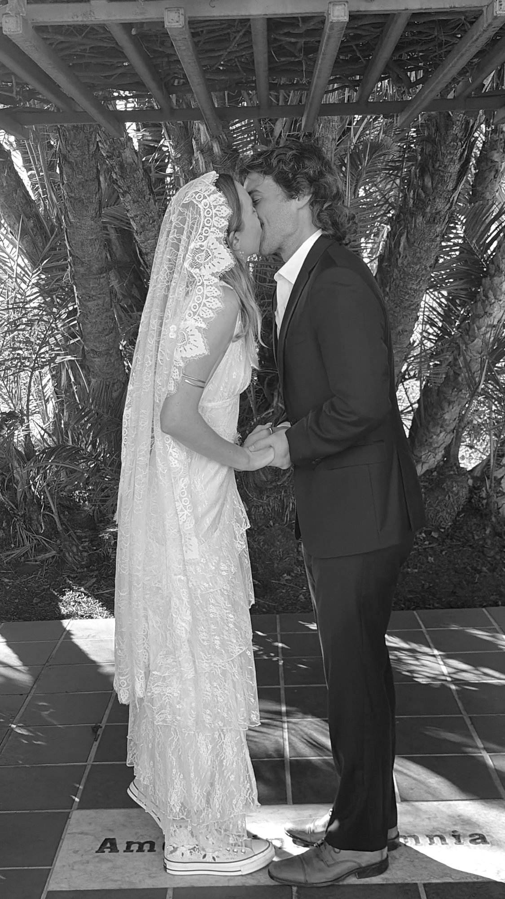
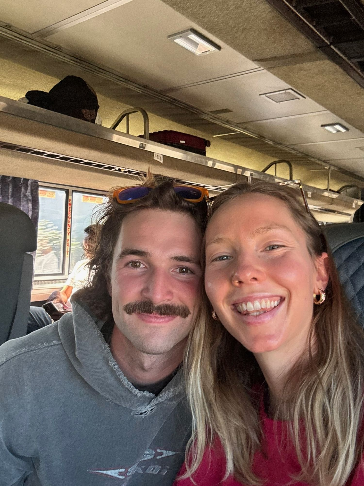
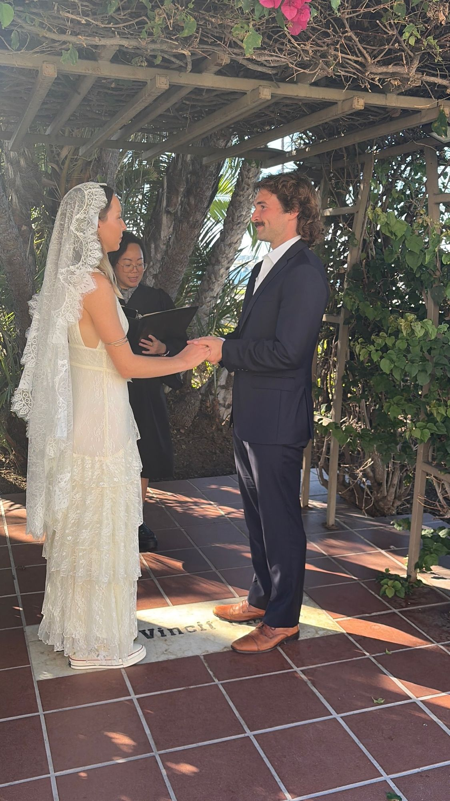
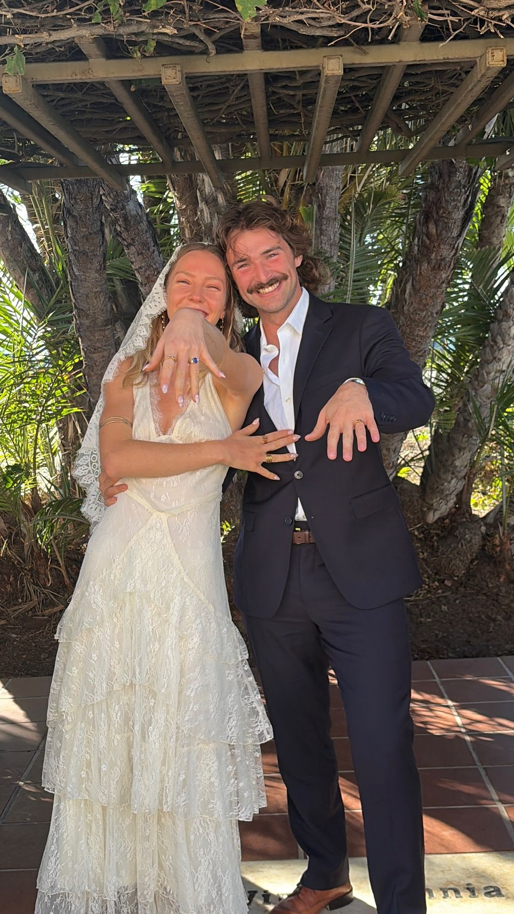
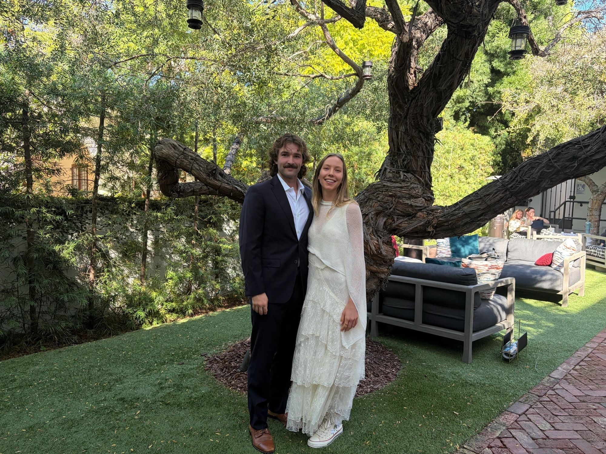
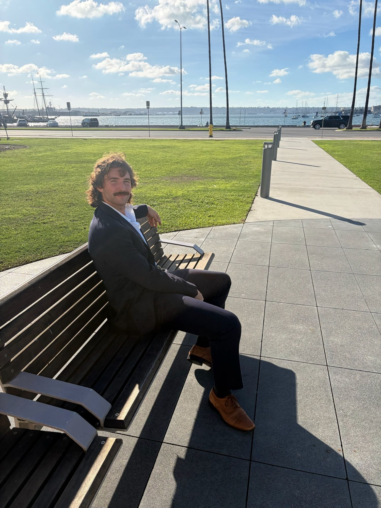
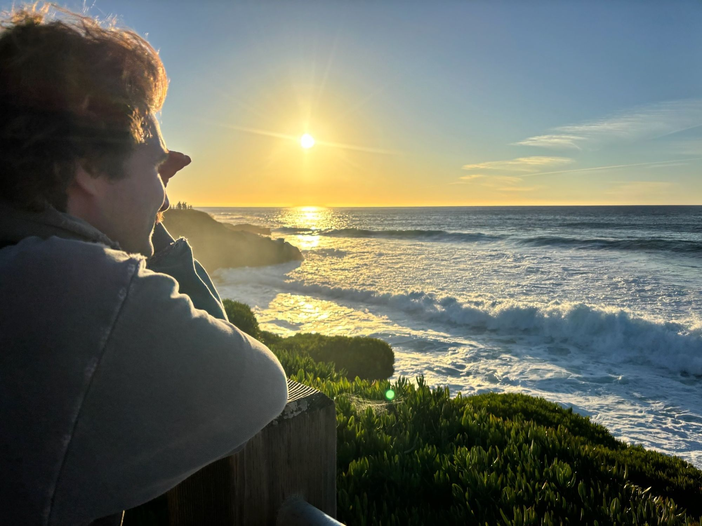
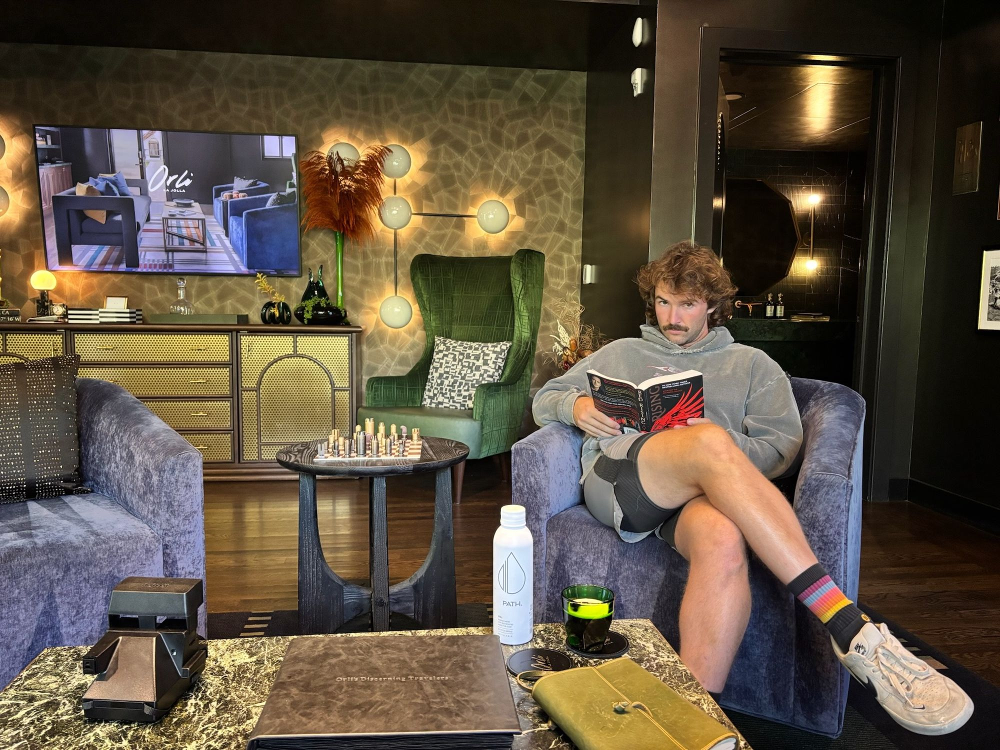
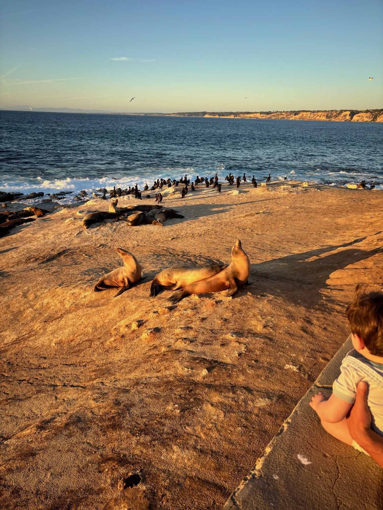

WE’RE MARRIED!
By Liz Barranco

We took the Surfliner train from LA to San Diego on Monday, November 2, for a mini wedding getaway and stayed in La Jolla.

We got married at the San Diego courthouse near Waterfront Park on November 3. It was just the two of us (and our court-appointed witness, Oscar, who was our hype man). There were tears shed for all four minutes of the ceremony (by both parties). :)




We had an awesome few days taking in our new roles as husband and wife. We went on lots of long walks along the La Jolla coast, drank coffee, read a lot, ate some good food, and of course watched the sea lions play in the surf!



Then it was back to Redondo to pack up the house and get ready for the move into the Transit!